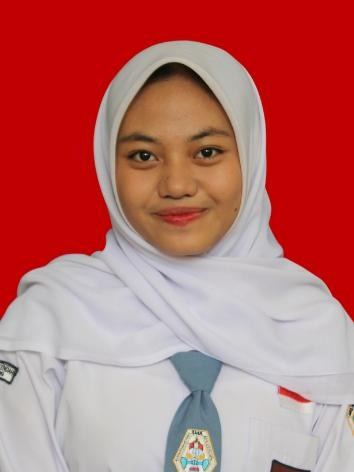

CURRICULUM VITAE
Kania Fairunissa
Pelajar • SMA Karya Pembangunan Baleendah
Tentang Saya
Saya adalah seorang pelajar yang senang mempelajari hal-hal baru, mengembangkan kreativitas, dan mengikuti kegiatan sekolah. Saya juga berusaha menjadi pribadi yang bertanggung jawab dan mampu bekerja sama dalam tim.
Identitas Diri
NamaKania Fairunissa
Umur17 tahun
Tanggal lahir3 Desember 2008
AlamatKomplek Baranangsiang Indah, RT 01/RW 02, Ciparay, Kabupaten Bandung, Jawa Barat
SekolahSMA Karya Pembangunan Baleendah
Hobi
- Memasak
- Menggambar
- Menyanyi
Keahlian
- Mengelola uang kas kelas
- Bekerja sama dalam tim
- Bertanggung jawab
- Kreativitas dalam menggambar dan memasak
Pengalaman Organisasi & Ekstrakurikuler
Ekstrakurikuler Paduan Suara
Periode 2025–2026
Mengikuti kegiatan paduan suara di sekolah.
Bendahara Kelas
Selama 2 tahun
Membantu mengelola dan mencatat uang kas kelas dengan bertanggung jawab.